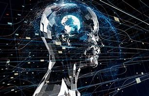
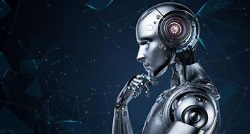
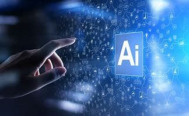
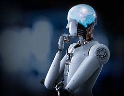

Program oparty na sztucznej inteligencji może zautomatyzować powtarzalne zadania, pozwalając pracownikom skupić się na bardziej złożonej i kreatywnej pracy. Może to prowadzić do zwiększenia produktywności, poprawy dokładności, zmniejszenia liczby błędów ludzkich i obniżenia kosztów.
W niektórych dziedzinach, takich jak medycyna czy analiza danych, SI może osiągać wyższą dokładność niż ludzie.
Sztuczna inteligencja może analizować duże ilości danych i tworzyć prognozy, zapewniając wgląd, którego ludzie mogliby nie być w stanie zidentyfikować. Może to prowadzić do lepszego podejmowania decyzji i rozwiązywania problemów w obszarach takich jak finanse, marketing i opieka zdrowotna.
Jedną z największych zalet sztucznej inteligencji jest możliwość szybkiego przetwarzania i analizowania dużych ilości danych, takich jak dokumentacja medyczna lub informacje o klientach. Może to pomóc w identyfikacji wzorców i trendów, które mogą nie być od razu widoczne dla ludzi.
Sztuczna inteligencja może pomóc lekarzom w diagnozowaniu chorób, tworzeniu spersonalizowanych planów leczenia i identyfikowaniu potencjalnych zagrożeń dla zdrowia. Może również pomóc w badaniach medycznych, analizując duże ilości danych i identyfikując nowe połączenia.
Sztuczna inteligencja może wykonywać zadania, które są zbyt niebezpieczne lub trudne dla ludzi, takie jak eksploracja kosmosu, obsługa niebezpiecznych materiałów i poszukiwanie ocalałych w strefach katastrof.
W sektorze bezpieczeństwa SI może wykrywać niebezpieczne zachowania, oszustwa czy ataki cybernetyczne.
Dzięki SI możemy dostosowywać treści, reklamy i rekomendacje do indywidualnych potrzeb użytkowników.
 SI nie posiada emocji ani empatii, co może być problematyczne w niektórych kontekstach, np. w obszarze opieki zdrowotnej.
Automatyzacja za pomocą sztucznej inteligencji może prowadzić do zwolnień i bezrobocia, szczególnie w branżach, w których powtarzalne zadania można łatwo zautomatyzować. Może to mieć znaczące konsekwencje gospodarcze i społeczne, takie jak wzrost nierówności.
Sztuczna inteligencja może być wykorzystywana do złośliwych celów, takich jak hakowanie, cyberataki i inwigilacja. Istnieje również możliwość wykorzystania sztucznej inteligencji do tworzenia fałszywych wiadomości, fałszywych filmów i innych form dezinformacji oraz popełniania błędów.
Systemy sztucznej inteligencji są często złożone i trudne do zrozumienia, co utrudnia pociągnięcie osób lub organizacji do odpowiedzialności za ich działania. Ponadto wiele systemów AI działa w sposób "czarnej skrzynki", w którym trudno jest zrozumieć, w jaki sposób podejmowane są decyzje.
Systemy AI mogą utrwalać, a nawet wzmacniać istniejące uprzedzenia w społeczeństwie, prowadząc do dyskryminujących wyników. Jest to szczególnie niepokojące w obszarach takich jak wymiar sprawiedliwości w sprawach karnych, udzielanie pożyczek i zatrudnianie.
Kolejną wadą sztucznej inteligencji jest to, że może ona podejmować decyzje bez interwencji człowieka, co może prowadzić do braku odpowiedzialności i zrozumienia, w jaki sposób decyzje te są podejmowane. Ponadto, duże uzależnienie od technologii AI może prowadzić do braku umiejętności krytycznego myślenia i podejmowania decyzji u ludzi.
Tworzenie i zarządzanie systemami SI jest skomplikowane i wymaga specjalistycznej wiedzy.
SI może popełniać błędy, zwłaszcza jeśli dane treningowe są nieodpowiednie lub niewystarczające.
Decyzje podejmowane przez SI mogą mieć wpływ na ludzi i społeczeństwo. Wymaga to odpowiednich regulacji i etycznych wytycznych.
 